기억하기 어려운 테이스팅
여러 주류를 시음하다 보면 각각의 맛과 향을 정확히 기억하기 어렵습니다.
2030 LIQUOR EXPO · FUTURE EXPERIENCE
기록을 넘어, 취향을 발견하는
새로운 테이스팅 경험.
주류 라벨을 인식하고, 테이스팅 경험을 기록하며,
나의 취향에 가까운 새로운 주류를 발견하는 스마트 디바이스.
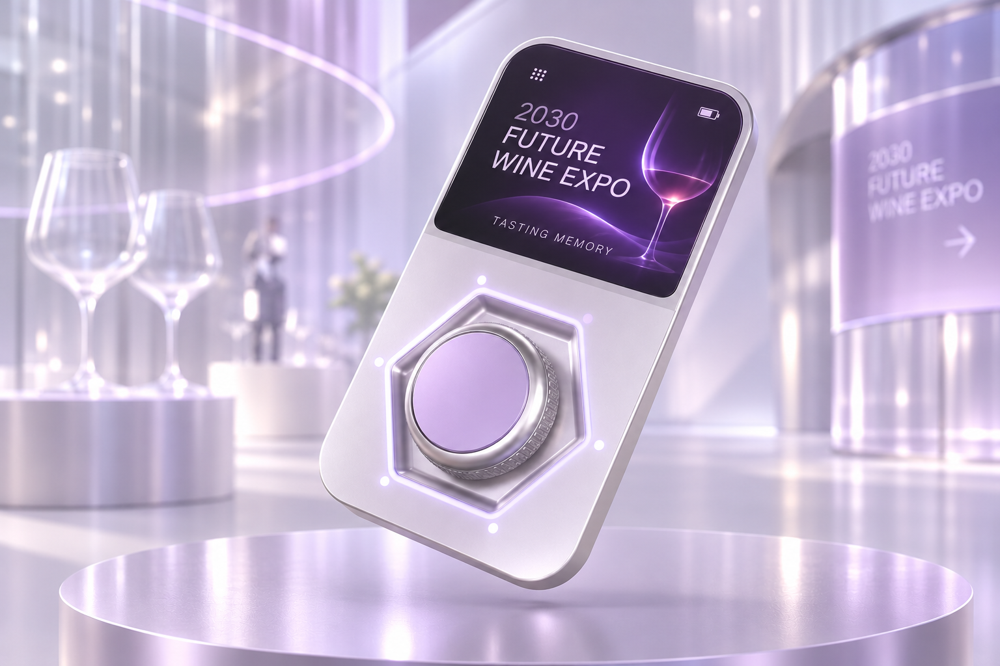
THE IDEA
Tasting Memory는 주류 박람회에서 개인의 테이스팅 경험을 기록하고, AI를 통해 취향에 맞는 새로운 주류를 발견하도록 돕는 미래형 스마트 테이스팅 디바이스.
2030년의 주류 박람회에서 다양한 술을 경험하는 과정은 즐겁지만, 각각의 향과 맛을 기억하고 나에게 맞는 다음 주류를 찾는 일은 여전히 번거롭습니다. Tasting Memory는 그 경험을 기록과 발견으로 연결합니다.
USER PERSONA
그림을 그리고 전시하는 아티스트. 주류 박람회를 즐겨 찾고, 마음에 드는 술을 수집해 진열장에 보관합니다. 매년 주류 박람회를 방문하며 새로운 맛과 향을 발견하는 일을 좋아합니다.
여러 주류를 시음하다 보면 각각의 맛과 향을 정확히 기억하기 어렵습니다.
마음에 드는 주류의 정보를 매번 직접 기록하고 정리하는 과정이 번거롭습니다.
내가 좋아하는 맛과 비슷한 주류나 해당 부스를 찾아가기 어렵습니다.
TASTING MEMORY · 3D MODEL
제품의 실제 3D 모델을 회전해 살펴보고, 각 부품을 선택해 기능을 확인해 보세요. 다이얼과 버튼의 작동도 직접 체험할 수 있습니다.
PART EXPLORER
회전 조작으로 화면의 항목과 테이스팅 수치를 조절합니다.
라벨 촬영 및 주류 정보 인식
테이스팅 항목 조절 및 저장
취향에 맞는 부스 방향 안내
HOW IT WORKS
라벨 인식부터 취향 분석, 부스 추천까지. 기록된 테이스팅 경험이 다음 발견으로 이어집니다.
내장 카메라로 주류 라벨을 촬영하면 AI가 주류의 종류와 브랜드 정보를 인식합니다.
사용자가 테이스팅 후 찜해서 저장한 주류만을 기준으로 취향 데이터를 분석합니다.
분석된 취향과 유사한 주류를 보유한 박람회 부스를 추천합니다.
실내 위치 인식으로 추천 부스의 방향을 파악하고 해당 방향의 LED만 점등합니다.
박람회장 내 위치 신호 장치가 사용자의 위치를 파악합니다. 추천 부스까지의 방향에 맞춰 육각형 LED의 해당 구간만 빛납니다.
CONNECTED EXPERIENCE
기기에서 기록한 테이스팅 정보는 앱에서도 확인할 수 있습니다. 제공된 UI 시안을 개별 화면으로 나누어 소개합니다.
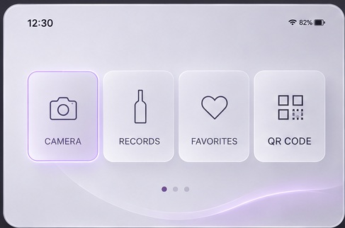
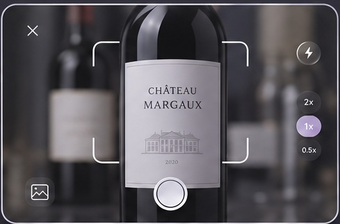
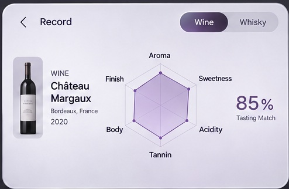
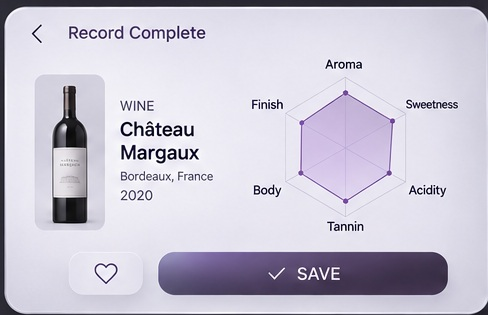
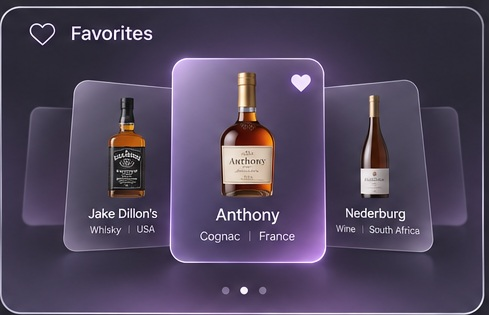
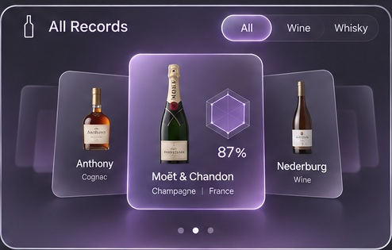
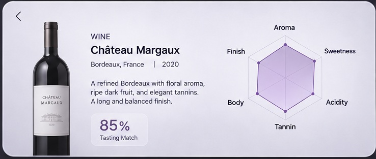
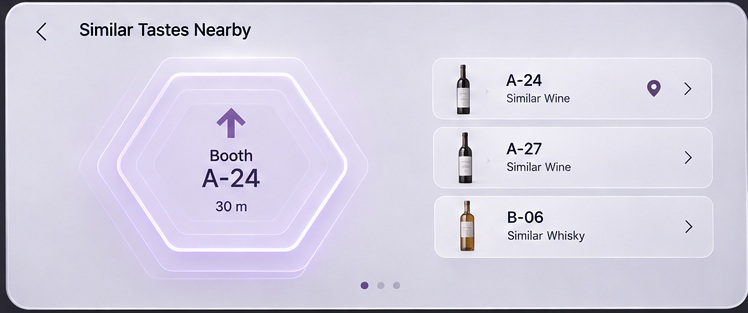
A DAY AT THE EXPO
박람회 입장부터 기기 반납까지, Tasting Memory와 함께하는 14개의 사용 장면입니다.


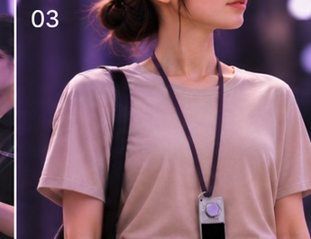

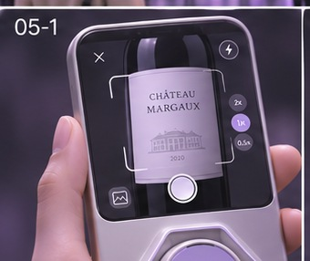
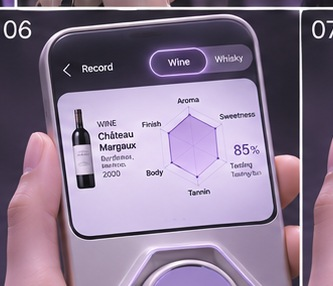
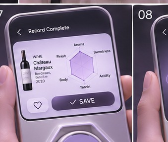
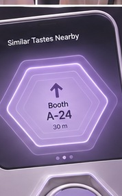
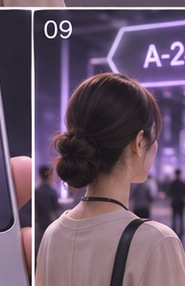
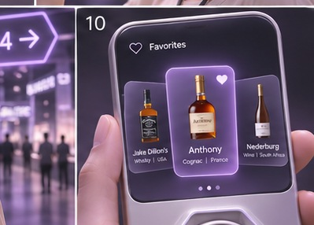
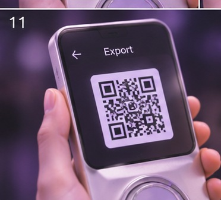
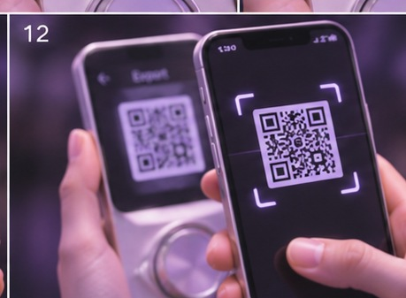
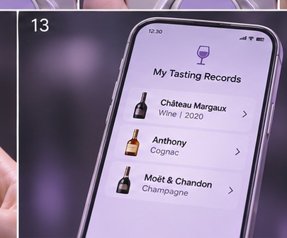
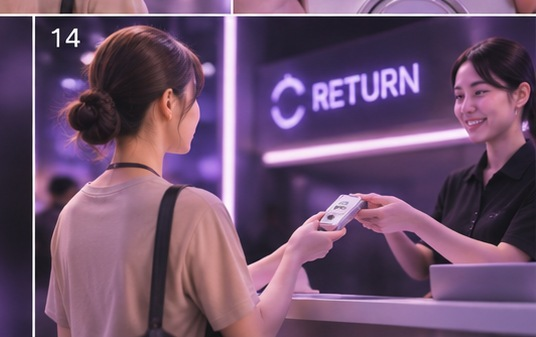
DESIGN DIRECTION
유기적 조형과 차분한 미래감, 절제된 고급스러움을 바탕으로 실버와 라벤더 톤을 조합합니다.
차분한 실버 바디에 반투명한 빛과 절제된 퍼플 톤을 더해, 기술적이면서도 감각적인 테이스팅 오브제를 완성합니다.
유기적인 곡선과 비대칭 실루엣, 부드럽게 이어지는 볼륨.
과한 광택을 줄이고 빛을 부드럽게 머금는 표면 표현.
필요한 LED 구간만 선택적으로 빛나는 절제된 인터랙션.
TECHNICAL OVERVIEW
박람회 현장에서 휴대하고 조작하기 쉽도록 설계한 슬림한 스마트 테이스팅 디바이스.